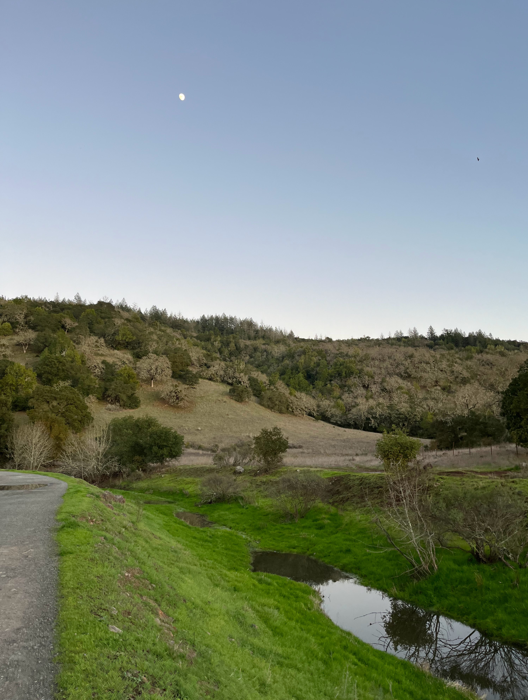
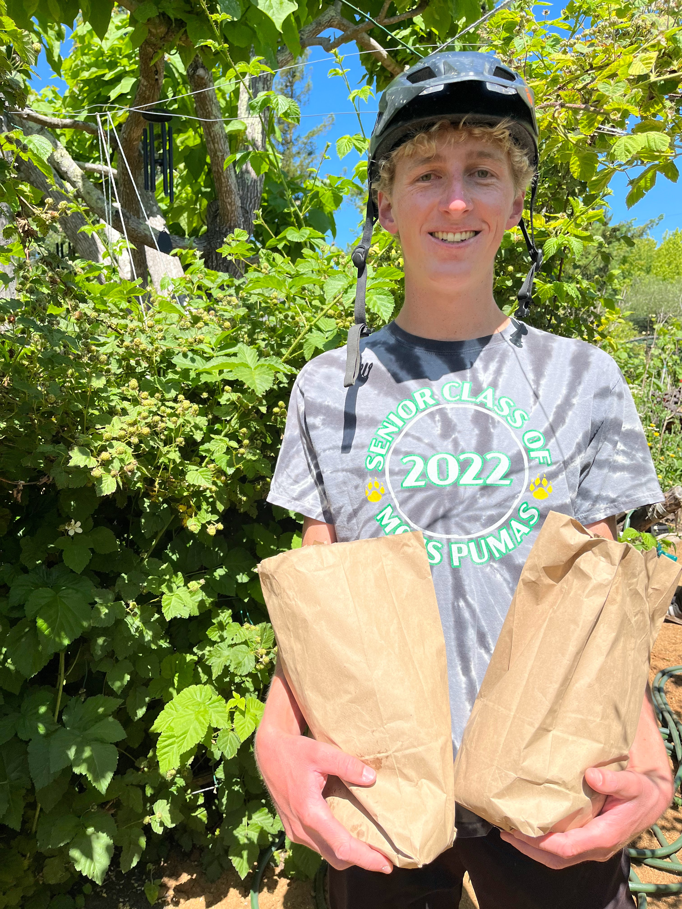

Annadel State Park
Annadel State Park, nestled in Sonoma County, is renowned for its scenic beauty characterized by majestic oak trees and rolling golden hills. Its extensive network of hiking, mountain biking, and running trails meanders through diverse terrain, offering outdoor enthusiasts a chance to immerse themselves in the park's natural splendor while enjoying recreational activities amidst tranquil surroundings. Whether exploring the lush forests or traversing the undulating trails, visitors can experience the serene charm of Annadel State Park while reveling in its picturesque vistas.
Wildflour Garden & Bakery
This charming bakery not only offers delectable bread but also boasts a captivating secret garden tucked away behind its doors. Amidst the aroma of freshly baked goods, visitors can escape into the tranquility of lush greenery, vibrant flowers, and cozy seating areas, creating a serene oasis perfect for enjoying a leisurely bite or simply unwinding amidst nature's beauty. With its delightful fusion of delicious treats and enchanting outdoor space, this bakery provides a truly magical experience for patrons seeking both culinary delights and a peaceful retreat.

Tableau Garden Visualization